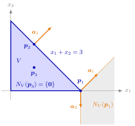

be nonempty. For p∈V, the inequality ai⊤x≤bi is binding at p if ai⊤p=bi, and I(p):={i∈{1,…,m}:ai⊤p=bi} is the binding index set at p. Then:
(a)NV(p)=Cone({ai:i∈I(p)}), where the right-hand side is {0} if I(p)=∅.
(b) For a∈Rn∖{0}:Ha={x∈Rn:a⊤x=a⊤p} is a supporting hyperplane of V through p with a⊤x≤a⊤p for all x∈V if and only if a is a nonnegative linear combination of the vectors ai with i∈I(p).
For a polyhedral set, the normal cone at p is pure bookkeeping: list the inequalities that are tight at p, take their normal vectors ai, and form all nonnegative combinations. The supporting hyperplanes through p are exactly the Ha for nonzero a in this finitely generated cone.

The figure shows Example 1 below, with each normal cone drawn from its own point. At the corner p1=(3,0) rows 1 and 3 bind, so NV(p1) is the grey sector between a1=(1,1) and a3=(0,−1). At p2=(1,2) on the edge x1+x2=3 only row 1 binds, and the normal cone shrinks to the half-line along a1. At p3=(1,1) no row binds and NV(p3)={0}.
One inclusion is a one-line computation: if a=i∈I(p)∑λiai with λi≥0, then a⊤(x−p)=i∈I(p)∑λi(ai⊤x−bi)≤0 on V. The other uses that the finitely generated cone is closed, so that a vector a outside it can be separated from it by a hyperplane, which yields a direction d with ai⊤d≤0 for the binding rows and a⊤d>0. A short step p+td stays in V because the nonbinding rows have slack, and it increases a⊤x, so a∈/NV(p). Linearity is used in this step; for nonlinear constraints only the inclusion given by supporting hyperplanes from gradients survives.
The number of binding inequalities sets the shape. With none, NV(p)={0} and no supporting hyperplane passes through p; with exactly one, say with ai=0, the normal cone is a half-line and the only supporting hyperplane through p is the hyperplane ai⊤x=bi itself; at a corner point of the feasible region of a linear program several rows bind and the cone has several generators. Since Ha=H−a, fixing the side a⊤x≤a⊤p loses no hyperplanes.
The theorem also separates two polyhedral sets with a common point p (Examples 2–4 below): every separating hyperplane passes through p, and Ha separates with V1 below and V2 above exactly when a∈NV1(p) and −a∈NV2(p). In Week 5 the same cone at an optimal corner point explains where the dual linear program comes from.
NV(p)=Cone({ai:i∈I(p)}), and NV(p)={0} if I(p)=∅.
The supporting hyperplanes Ha of V through p with a⊤x≤a⊤p on V are exactly those with a=0 a nonnegative linear combination of the binding normals.
With hi(x)=ai⊤x−bi, the cone Cp of nonnegative combinations of the gradients ∇hi(p)=ai of the active constraints, used for supporting hyperplanes from gradients, equals NV(p).
If p∈V1∩V2 for polyhedral V1,V2, then the separating hyperplanes of V1 and V2 with V1 on the side a⊤x≤a⊤p are the Ha with a=0,a∈NV1(p) and −a∈NV2(p) (Examples 2–4 below).
For c∈Rn,p∈V maximizes c⊤x over V if and only if c∈Cone({ai:i∈I(p)}) (the definition of the normal cone combined with (a)).
1. A triangle. Write V={x1+x2≤3,x1≥0,x2≥0} as a1=(1,1),b1=3;a2=(−1,0),b2=0;a3=(0,−1),b3=0. At p1=(3,0),I(p1)={1,3} and NV(p1)=Cone({(1,1),(0,−1)}). At p2=(1,2),I(p2)={1} and NV(p2)={λ(1,1):λ≥0}. At p3=(1,1) nothing binds (1+1<3), so NV(p3)={0}. Through p1,a=(1,1) gives x1+x2=3, which contains the edge from (3,0) to (0,3), while a=(1,1)+(0,−1)=(1,0) gives x1=3, which meets V only in p1 (there x2≤3−x1=0).
2. All separating hyperplanes through a point. For V1={−2x1+x2≤6,x1+x2≤3,x1−x2≤1},V2={−2x1−x2≤−5,x2≤4,−3x1+x2≤−5} and p=(2,1), rows 2, 3 of V1 and rows 1, 3 of V2 bind, so NV1(p)=Cone({(1,1),(1,−1)}) and NV2(p)=Cone({(−2,−1),(−3,1)}). The condition −a∈NV2(p) means a∈Cone({(2,1),(3,−1)}), and both generators lie in NV1(p):(2,1)=23(1,1)+21(1,−1) and (3,−1)=1(1,1)+2(1,−1). So the separating hyperplanes through p are the Ha with a∈Cone({(2,1),(3,−1)})∖{0}, the same family as the parametrization 45β(1,1)+2α(3,−1) with α>0,0≤β≤2α, obtained by solving for the coefficients directly.
3. No separating hyperplane. In R3 let V1={2x1+x2+x3≤4,x1−x2≤1,2x2+3x3≤5,x1+x2+x3≤4},V2={−2x1−x2+x3≤−2,−x1+x2≤0,−2x2−3x3≤1,−x1−x2−x3≤1} and p=(1,1,1). Rows 1 and 3 of V1 and rows 1 and 2 of V2 bind at p, so NV1(p)=Cone({(2,1,1),(0,2,3)}) and NV2(p)=Cone({(−2,−1,1),(−1,1,0)}). A separating hyperplane Ha through p needs a=0 with a∈NV1(p) and −a∈NV2(p), that is, a nonzero solution with nonnegative coefficients of λ1(2,1,1)+λ3(0,2,3)=μ1(2,1,−1)+μ2(1,−1,0). This equation forces μ1=87μ2,λ1=811μ2 and λ3=−43μ2, so λ3≥0 and μ2≥0 leave only the zero solution. Because p∈V1∩V2, every separating hyperplane would have to pass through p, so V1 and V2 have no separating hyperplane at all.
4. A unique separating hyperplane. For p=(2,4),V1={−x1+2x2≤10,3x1+x2≤10,x1−x2≤2} and V2={−x1+x2≤2,−2x1−x2≤−8,−x1−x2≤−5}, the row values at p are (6,10,−2) and (2,−8,−6). So only row 2 binds in V1, and NV1(p)={λ(3,1):λ≥0}: the only supporting hyperplane of V1 through p is 3x1+x2=10. Rows 1 and 2 bind in V2, and −(3,1)=31(−1,1)+34(−2,−1)∈NV2(p), so 3x1+x2=10 is also the unique separating hyperplane of V1 and V2 through p.
Aliases: binding index set, binding inequality, supporting hyperplanes of a polyhedral set
Keywords: N_V(\boldsymbol{p})=\operatorname{Cone}({\boldsymbol{a}i\colon i\in I(\boldsymbol{p})}), I(\boldsymbol{p})={i\colon\boldsymbol{a}_i^{\top}\boldsymbol{p}=b_i}, \boldsymbol{a}\in N), all supporting hyperplanes through a point, separating two polyhedral sets through a common point
Symbols: alpha, beta, element of, intersection, lambda, mu, nabla gradient, real numbers, sum
}(\boldsymbol{p}),\ -\boldsymbol{a}\in N_{V_2}(\boldsymbol{p
Last updated: 5 November 2026 12:47
Normal Cone of a Polyhedral SetDual Linear ProgramExtreme Points of a Polyhedral SetNormal ConeFinitely Generated Convex ConePolyhedral Convex SetBinding and Nonbinding ConstraintsSupporting Hyperplanes from GradientsSeparating HyperplaneSupporting HyperplaneSeparation of a Point and a Closed Convex SetFarkas' LemmaCorner Point